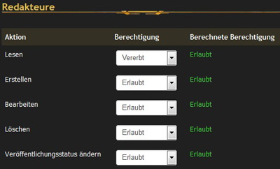
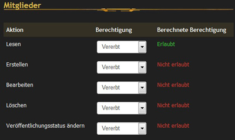
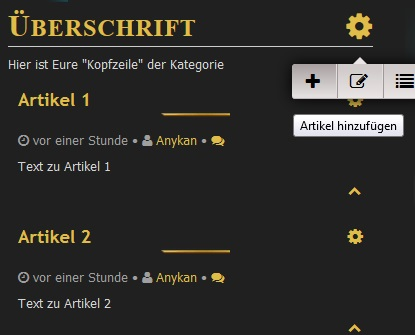

Artikel
Das EQdkp Plus 2.0 stellt wesentliche neue Funktionen zur Verfügung. Dieser Artikel dient dazu, diese Funktionen etwas näher kennenzulernen.
Artikelsystem
Anstatt der früheren News und Infoseiten basiert nun alles auf einem Artikelsystem. Jede News und jede Seite ist dabei ein Artikel. Über Artikelkategorien können diese leicht gruppiert werden. Auch kann man dadurch Blogs ermöglichen.
Die einzelnen Artikel können über einen Weiterlesen-Bereich und Seitenumbrüchen aufgeteilt werden. Auch besteht die Möglichkeit, über den Editor Bildergalerien, Items oder Raidloot in einen Artikel einzufügen.
Contents
Artikelkategorien
Artikelkategorien dienen einerseits zum Ordnen der einzelnen Artikel im Administrationsbereich, aber auch um komplette Seiten wie z.B ein Blog, News oder Gästebuch zu erstellen, in dem dann z.B untereinander die einzelnen Beiträge erscheinen.
Artikelkategorien Erstellen
Wenn Ihr die Berechtigung habt, könnt Ihr Kategorien erstellen, löschen und bearbeiten.
Kategorien können genau wie Artikel in das Menü eingebunden und abgerufen werden.
Durch klicken auf den Bleistift könnt Ihr die Kategorie selbst bearbeiten und durch klicken auf den Namen kommt Ihr zu den dazugehörigen Artikeln.
Das Löschen vorinstallierter Artikelkategorien / Artikel kann zu Fehlern führen !!!
Allgemeine Einstellungen
{kind=link}
In diesem Bereich könnt Ihr eine Art "Kopfzeile" erstellen (siehe Bild) Dabei habt Ihr verschiedene Werkzeuge, wie Bilder, Tabellen etc. zur Verfügung. Wenn Ihr die Kategorie in euer Menü eingebunden habt und diese aufruft, wird als erstes die "Kopfzeile" dargestellt und direkt im Anschluß alle Artikel aus der Kategorie die Ihr erstellt habt (Standard Einstellung, änderbar siehe unten).
Einstellungen
Hier könnt Ihr alles Wichtige zu der Kategorie einstellen. Besonders zu erwähnen sind:
- Alias Wenn dieses Feld frei bleibt, wird vom System die "Überschrift" hier eingesetzt. Sollte es aber vorkommen, dass es diese doppelt (bei Kategorien selten)gibt, kann es zu Problemen führen. Daher solltet Ihr immer darauf achten, welchen Alias Ihr vergibt.
Tip: Ihr könnt dem Alias einfach eine Nummer hinten drann setzten. zB. Überschrift6.
- Veröffentlicht Ob die Kategorie angezeigt werden soll oder nicht
- Portal Layout Welches Portallayout für diese Kategorie verwendet werden soll. So könnt ihr Portalboxen abhängig von der Kategorie anzeigen
- Übergeordnete Kategorie Welche Kategorie das Elternelement ist. Hierdurch können Bäume gebildet werden.z.B.
News
|- Deutsch
|-- WoW
|- English
|-- WoW
|...- Listentyp Hier könnt Ihr aussuchen wie Eure Artikel in der Kategorie dargestellt werden sollen.
- Unterkategorien auf Liste anzeigen Ob die Artikel der Unterkategorien auch in der aktuellen Kategorie angezeigt werden sollen
- Artikel von diesen Kategorien einbinden Wähle die Kategorien aus, von denen die Artikel eingebunden werden sollen. Dadurch kannst du z.B. Berechtigungen für Unterkategorien vergeben, und deren Artikel dann in der aktuellen Kategorie anzeigen lassen. Die eigene Kategorie sollte, muss aber nicht ausgewählt sein.
- Nur Artikel mit Status 'Featured' anzeigen Es werden nur Artikel angezeigt, die mit dem Status 'Featured' (also den gelben Stern besitzen) in der Kategorie angezeigt
- Featured Artikel oben anzeigen Damit wählt Ihr aus ob die zu hervorhebenden Artikel (featured) oben oder unten angezeigt werden.
- Portal Layout Hiermit wählt ihr aus, mit welchem Portal-Layout diese Artikelkategorie angezeigt werden soll. Damit ist es möglich jeder Kategori eigene oder gemeinsame Portal-Layoute zuzuweisen.
Berechtigungen
Hier ist das Herzstück des neuen Artikelsystems.
Hier tauchen alle Benutzerguppen auf, den Ihr einzeln Rechte zu der Kategorie vergeben könnt.
Vorteil:
Ihr müsst keiner Benutzerguppen über Berechtigung "Artikel Verwalten" geben, damit z.B eine Gruppe News schreiben kann.
Ihr könnt hier der Gruppe Lese- und Schreibrechte geben ohne das sie Adminrechte bekommen.
Als Beispiel schauen wir uns die Kategorie "News" und die Gruppen "Redakteure" und "Mitglieder" im vergleich an.
 
{kind=link}
{kind=link}
Zusätzlich sehen wir hier ein Auszug aus den Berechtigung der Redakteure
{kind=link}
Dadurch das er keine Berechtigung hat zu Verwalten, kommt er nicht mehr in die Administrationsoberfläche kann aber dennoch News schreiben, in dem er auf der
"News" Seite rechts auf das Zahnrad klickt und dann auf Artikel hinzufügen.

{kind=link}
Alle Rechte die Ihr in einer Kategorie einstellt, beziehen sich immer auf alle enthaltene Artikel.
Standard-Artikelkategorien wiederherstellen
Manchmal hat man Artikelkategorien gelöscht, welche wichtig für das System sind. Anstatt das System neu installieren zu müssen, kannst du auch folgende SQL-Befehle in einem Datenbank-Tool wie phpmyadmin o.ä. ausführen. Bitte passe das Prefix an deine Installation an (z.B. eqdkp21_). Nach dem Durchführen der Datenbank-Änderung musst du noch den EQdkp Cache leeren (über die Cacheverwaltung), damit die Änderungen sichtbar werden.
DELETE FROM `eqdkp22_article_categories` WHERE `id` IN (1,2,3,4,5,6,7,8,9);
INSERT INTO `eqdkp22_article_categories` (`id`, `name`, `alias`, `portal_layout`, `description`, `per_page`, `permissions`, `published`, `parent`, `sort_id`, `list_type`, `aggregation`, `featured_only`, `notify_on_onpublished_articles`, `social_share_buttons`, `show_childs`, `article_published_state`, `hide_header`, `sortation_type`, `featured_ontop`, `hide_on_rss`) VALUES (1, 'System', 'system', 1, '', 25, 'a:5:{s:3:"rea";a:6:{i:2;s:1:"1";i:3;s:1:"1";i:4;s:1:"1";i:5;s:1:"1";i:6;s:1:"1";i:1;s:1:"1";}s:3:"cre";a:6:{i:2;s:1:"1";i:3;s:1:"1";i:4;s:2:"-1";i:5;s:2:"-1";i:6;s:1:"0";i:1;s:2:"-1";}s:3:"upd";a:6:{i:2;s:1:"1";i:3;s:1:"1";i:4;s:2:"-1";i:5;s:2:"-1";i:6;s:1:"0";i:1;s:2:"-1";}s:3:"del";a:6:{i:2;s:1:"1";i:3;s:1:"1";i:4;s:2:"-1";i:5;s:2:"-1";i:6;s:1:"0";i:1;s:2:"-1";}s:3:"chs";a:6:{i:2;s:1:"1";i:3;s:1:"1";i:4;s:2:"-1";i:5;s:2:"-1";i:6;s:1:"0";i:1;s:2:"-1";}}', 1, 0, 99999999, 1, 'a:0:{}', 0, 0, 0, 0, 1, 0, 1, 0, 1);
INSERT INTO `eqdkp22_article_categories` (`id`, `name`, `alias`, `portal_layout`, `description`, `per_page`, `permissions`, `published`, `parent`, `sort_id`, `list_type`, `aggregation`, `featured_only`, `notify_on_onpublished_articles`, `social_share_buttons`, `show_childs`, `article_published_state`, `hide_header`, `sortation_type`, `featured_ontop`, `hide_on_rss`) VALUES (2, 'News', 'news', 1, '', 15, 'a:5:{s:3:"rea";a:6:{i:2;s:2:"-1";i:3;s:2:"-1";i:4;s:2:"-1";i:5;s:2:"-1";i:6;s:2:"-1";i:1;s:2:"-1";}s:3:"cre";a:6:{i:2;s:2:"-1";i:3;s:2:"-1";i:4;s:2:"-1";i:5;s:2:"-1";i:6;s:1:"1";i:1;s:2:"-1";}s:3:"upd";a:6:{i:2;s:2:"-1";i:3;s:2:"-1";i:4;s:2:"-1";i:5;s:2:"-1";i:6;s:1:"1";i:1;s:2:"-1";}s:3:"del";a:6:{i:2;s:2:"-1";i:3;s:2:"-1";i:4;s:2:"-1";i:5;s:2:"-1";i:6;s:1:"1";i:1;s:2:"-1";}s:3:"chs";a:6:{i:2;s:2:"-1";i:3;s:2:"-1";i:4;s:2:"-1";i:5;s:2:"-1";i:6;s:1:"1";i:1;s:2:"-1";}}', 1, 1, 99999999, 1, 'a:1:{i:0;s:1:"2";}', 0, 0, 1, 0, 1, 1, 1, 0, 0);
INSERT INTO `eqdkp22_article_categories` (`id`, `name`, `alias`, `portal_layout`, `description`, `per_page`, `permissions`, `published`, `parent`, `sort_id`, `list_type`, `aggregation`, `featured_only`, `notify_on_onpublished_articles`, `social_share_buttons`, `show_childs`, `article_published_state`, `hide_header`, `sortation_type`, `featured_ontop`, `hide_on_rss`) VALUES (3, 'Events', 'events', 1, '', 25, 'a:5:{s:3:"rea";a:6:{i:2;s:2:"-1";i:3;s:2:"-1";i:4;s:2:"-1";i:5;s:2:"-1";i:6;s:2:"-1";i:1;s:2:"-1";}s:3:"cre";a:6:{i:2;s:2:"-1";i:3;s:2:"-1";i:4;s:2:"-1";i:5;s:2:"-1";i:6;s:2:"-1";i:1;s:2:"-1";}s:3:"upd";a:6:{i:2;s:2:"-1";i:3;s:2:"-1";i:4;s:2:"-1";i:5;s:2:"-1";i:6;s:2:"-1";i:1;s:2:"-1";}s:3:"del";a:6:{i:2;s:2:"-1";i:3;s:2:"-1";i:4;s:2:"-1";i:5;s:2:"-1";i:6;s:2:"-1";i:1;s:2:"-1";}s:3:"chs";a:6:{i:2;s:2:"-1";i:3;s:2:"-1";i:4;s:2:"-1";i:5;s:2:"-1";i:6;s:2:"-1";i:1;s:2:"-1";}}', 1, 1, 99999999, 1, 'a:0:{}', 0, 0, 0, 0, 1, 1, 0, 0, 1);
INSERT INTO `eqdkp22_article_categories` (`id`, `name`, `alias`, `portal_layout`, `description`, `per_page`, `permissions`, `published`, `parent`, `sort_id`, `list_type`, `aggregation`, `featured_only`, `notify_on_onpublished_articles`, `social_share_buttons`, `show_childs`, `article_published_state`, `hide_header`, `sortation_type`, `featured_ontop`, `hide_on_rss`) VALUES (4, 'Items', 'items', 1, '', 25, 'a:5:{s:3:"rea";a:6:{i:2;s:2:"-1";i:3;s:2:"-1";i:4;s:2:"-1";i:5;s:2:"-1";i:6;s:2:"-1";i:1;s:2:"-1";}s:3:"cre";a:6:{i:2;s:2:"-1";i:3;s:2:"-1";i:4;s:2:"-1";i:5;s:2:"-1";i:6;s:2:"-1";i:1;s:2:"-1";}s:3:"upd";a:6:{i:2;s:2:"-1";i:3;s:2:"-1";i:4;s:2:"-1";i:5;s:2:"-1";i:6;s:2:"-1";i:1;s:2:"-1";}s:3:"del";a:6:{i:2;s:2:"-1";i:3;s:2:"-1";i:4;s:2:"-1";i:5;s:2:"-1";i:6;s:2:"-1";i:1;s:2:"-1";}s:3:"chs";a:6:{i:2;s:2:"-1";i:3;s:2:"-1";i:4;s:2:"-1";i:5;s:2:"-1";i:6;s:2:"-1";i:1;s:2:"-1";}}', 1, 1, 99999999, 1, 'a:0:{}', 0, 0, 0, 0, 1, 1, 0, 0, 1);
INSERT INTO `eqdkp22_article_categories` (`id`, `name`, `alias`, `portal_layout`, `description`, `per_page`, `permissions`, `published`, `parent`, `sort_id`, `list_type`, `aggregation`, `featured_only`, `notify_on_onpublished_articles`, `social_share_buttons`, `show_childs`, `article_published_state`, `hide_header`, `sortation_type`, `featured_ontop`, `hide_on_rss`) VALUES (5, 'Raids', 'raids', 1, '', 25, 'a:5:{s:3:"rea";a:6:{i:2;s:2:"-1";i:3;s:2:"-1";i:4;s:2:"-1";i:5;s:2:"-1";i:6;s:2:"-1";i:1;s:2:"-1";}s:3:"cre";a:6:{i:2;s:2:"-1";i:3;s:2:"-1";i:4;s:2:"-1";i:5;s:2:"-1";i:6;s:2:"-1";i:1;s:2:"-1";}s:3:"upd";a:6:{i:2;s:2:"-1";i:3;s:2:"-1";i:4;s:2:"-1";i:5;s:2:"-1";i:6;s:2:"-1";i:1;s:2:"-1";}s:3:"del";a:6:{i:2;s:2:"-1";i:3;s:2:"-1";i:4;s:2:"-1";i:5;s:2:"-1";i:6;s:2:"-1";i:1;s:2:"-1";}s:3:"chs";a:6:{i:2;s:2:"-1";i:3;s:2:"-1";i:4;s:2:"-1";i:5;s:2:"-1";i:6;s:2:"-1";i:1;s:2:"-1";}}', 1, 1, 99999999, 1, 'a:0:{}', 0, 0, 0, 0, 1, 0, 0, 0, 1);
INSERT INTO `eqdkp22_article_categories` (`id`, `name`, `alias`, `portal_layout`, `description`, `per_page`, `permissions`, `published`, `parent`, `sort_id`, `list_type`, `aggregation`, `featured_only`, `notify_on_onpublished_articles`, `social_share_buttons`, `show_childs`, `article_published_state`, `hide_header`, `sortation_type`, `featured_ontop`, `hide_on_rss`) VALUES (6, 'Calendar', 'calendar', 1, '', 25, 'a:5:{s:3:"rea";a:6:{i:1;s:2:"-1";i:2;s:2:"-1";i:3;s:2:"-1";i:4;s:2:"-1";i:5;s:2:"-1";i:6;s:2:"-1";}s:3:"cre";a:6:{i:1;s:2:"-1";i:2;s:2:"-1";i:3;s:2:"-1";i:4;s:2:"-1";i:5;s:2:"-1";i:6;s:2:"-1";}s:3:"upd";a:6:{i:1;s:2:"-1";i:2;s:2:"-1";i:3;s:2:"-1";i:4;s:2:"-1";i:5;s:2:"-1";i:6;s:2:"-1";}s:3:"del";a:6:{i:1;s:2:"-1";i:2;s:2:"-1";i:3;s:2:"-1";i:4;s:2:"-1";i:5;s:2:"-1";i:6;s:2:"-1";}s:3:"chs";a:6:{i:1;s:2:"-1";i:2;s:2:"-1";i:3;s:2:"-1";i:4;s:2:"-1";i:5;s:2:"-1";i:6;s:2:"-1";}}', 1, 1, 99999999, 1, 'a:1:{i:0;i:6;}', 0, 0, 0, 0, 1, 1, 1, 0, 1);
INSERT INTO `eqdkp22_article_categories` (`id`, `name`, `alias`, `portal_layout`, `description`, `per_page`, `permissions`, `published`, `parent`, `sort_id`, `list_type`, `aggregation`, `featured_only`, `notify_on_onpublished_articles`, `social_share_buttons`, `show_childs`, `article_published_state`, `hide_header`, `sortation_type`, `featured_ontop`, `hide_on_rss`) VALUES (7, 'Roster', 'roster', 1, '', 25, 'a:5:{s:3:"rea";a:6:{i:1;s:2:"-1";i:2;s:2:"-1";i:3;s:2:"-1";i:5;s:2:"-1";i:6;s:2:"-1";i:4;s:2:"-1";}s:3:"cre";a:6:{i:1;s:2:"-1";i:2;s:2:"-1";i:3;s:2:"-1";i:5;s:2:"-1";i:6;s:2:"-1";i:4;s:2:"-1";}s:3:"upd";a:6:{i:1;s:2:"-1";i:2;s:2:"-1";i:3;s:2:"-1";i:5;s:2:"-1";i:6;s:2:"-1";i:4;s:2:"-1";}s:3:"del";a:6:{i:1;s:2:"-1";i:2;s:2:"-1";i:3;s:2:"-1";i:5;s:2:"-1";i:6;s:2:"-1";i:4;s:2:"-1";}s:3:"chs";a:6:{i:1;s:2:"-1";i:2;s:2:"-1";i:3;s:2:"-1";i:5;s:2:"-1";i:6;s:2:"-1";i:4;s:2:"-1";}}', 1, 1, 99999999, 1, 'a:0:{}', 0, 0, 0, 0, 1, 1, 1, 0, 1);
INSERT INTO `eqdkp22_article_categories` (`id`, `name`, `alias`, `portal_layout`, `description`, `per_page`, `permissions`, `published`, `parent`, `sort_id`, `list_type`, `aggregation`, `featured_only`, `notify_on_onpublished_articles`, `social_share_buttons`, `show_childs`, `article_published_state`, `hide_header`, `sortation_type`, `featured_ontop`, `hide_on_rss`) VALUES (8, 'Punktestand', 'points', 1, '', 25, 'a:5:{s:3:"rea";a:6:{i:1;s:2:"-1";i:2;s:2:"-1";i:3;s:2:"-1";i:5;s:2:"-1";i:6;s:2:"-1";i:4;s:2:"-1";}s:3:"cre";a:6:{i:1;s:2:"-1";i:2;s:2:"-1";i:3;s:2:"-1";i:5;s:2:"-1";i:6;s:2:"-1";i:4;s:2:"-1";}s:3:"upd";a:6:{i:1;s:2:"-1";i:2;s:2:"-1";i:3;s:2:"-1";i:5;s:2:"-1";i:6;s:2:"-1";i:4;s:2:"-1";}s:3:"del";a:6:{i:1;s:2:"-1";i:2;s:2:"-1";i:3;s:2:"-1";i:5;s:2:"-1";i:6;s:2:"-1";i:4;s:2:"-1";}s:3:"chs";a:6:{i:1;s:2:"-1";i:2;s:2:"-1";i:3;s:2:"-1";i:5;s:2:"-1";i:6;s:2:"-1";i:4;s:2:"-1";}}', 1, 1, 99999999, 1, 'a:0:{}', 0, 0, 0, 0, 1, 1, 1, 0, 1);
INSERT INTO `eqdkp22_article_categories` (`id`, `name`, `alias`, `portal_layout`, `description`, `per_page`, `permissions`, `published`, `parent`, `sort_id`, `list_type`, `aggregation`, `featured_only`, `notify_on_onpublished_articles`, `social_share_buttons`, `show_childs`, `article_published_state`, `hide_header`, `sortation_type`, `featured_ontop`, `hide_on_rss`) VALUES (9, 'Charakter', 'character', 1, '', 25, 'a:5:{s:3:"rea";a:6:{i:1;s:2:"-1";i:2;s:2:"-1";i:3;s:2:"-1";i:5;s:2:"-1";i:6;s:2:"-1";i:4;s:2:"-1";}s:3:"cre";a:6:{i:1;s:2:"-1";i:2;s:2:"-1";i:3;s:2:"-1";i:5;s:2:"-1";i:6;s:2:"-1";i:4;s:2:"-1";}s:3:"upd";a:6:{i:1;s:2:"-1";i:2;s:2:"-1";i:3;s:2:"-1";i:5;s:2:"-1";i:6;s:2:"-1";i:4;s:2:"-1";}s:3:"del";a:6:{i:1;s:2:"-1";i:2;s:2:"-1";i:3;s:2:"-1";i:5;s:2:"-1";i:6;s:2:"-1";i:4;s:2:"-1";}s:3:"chs";a:6:{i:1;s:2:"-1";i:2;s:2:"-1";i:3;s:2:"-1";i:5;s:2:"-1";i:6;s:2:"-1";i:4;s:2:"-1";}}', 1, 1, 99999999, 1, 'a:0:{}', 0, 0, 0, 0, 1, 1, 1, 0, 1);
Artikel
Artikel können im EQdkp 2.0 eigenständige seiten (ehm. Wrapper) oder Teil einer Seite z.B Newspost (siehe Artikelkategorien) sein.
Artikel Erstellen
Als erstes sucht Ihr Euch aus, in welche Kategorie Ihr den Artikel Speichern wollt (später änderbar siehe Artikel verschieben). z.B "Pages" oder eine andere selbst erstellte Kategorie.
Klickt auf Artikel hinzufügen
Allgemeine Einstellung
Im Gegensatz zum erstellen einer Kategorie, habt Ihr hier noch viel mehr Werkzeuge zur Auswahl. Ihr könnt z.B Raidloot, Charaktere, Videos, Bilder etc. eintragen und Euch eine Individuelle Seite gestalten.
Einstellungen
{kind=link}
Auch hier gibt es weitere Einstellungsmöglichkeiten:
- Alias genau wie bei den Kategorien wird auch der Alias vom System automatisch vergeben, wenn Ihr keinen angibt (Überschrift).
- Wichtig !!! Der Alias des Artikels darf nicht so heißen wie die Kategorie, dass führt zu Konflikten.
- Featured ist vergleichbar mit "Angepinnt", "Sticky" wie es aus einigen Foren bekannt ist. Je nach Einstellung der Kategorie wird der Featured-Artikel am Anfang oder am Ende auftauchen.
- Angezeigt von bis Wie der Name schon sagt könnt Ihr einen Artikel zeitlich begrenzt anzeigen lassen.
- Kommentare, Bewertung Erlauben Wenn Ihr diese Optionen auswählt, können die Nutzer Kommentare oder Bewertungen auf dem Artikel hinterlassen.
- Header ausblenden wird die Überschrift des Artikels ausgeblendet.
Im Anschluß speichert Ihr den Artikel und er erscheint in der Liste.
In der Übersicht der Artikel habt Ihr noch drei weitere nenenswerte Möglichkeiten
- Das Auge. Hier mit könnt Ihr den Artikel schnell und einfach ausblenden. Ideal wenn der Artikel noch nicht fertig ist und nicht veröffentlicht werden soll.
- Der Stern. Der Stern entspricht dem "Featured".
- Das Kästchen. Ihr könnt nur in eines ein Häckchen setzten. Damit bewirkt Ihr, dass dieser Artikel der "Default-Artikel" dieser Kategorie ist. Verlinkt Ihr im Menü nur die Kategorie, erscheint dieser Artikel automatisch.
Artikel Verschieben
Möchtet Ihr ein Artikel aus einer Artikelkategorie in eine andere schieben, geht Ihr unter Administration --> Portal --> Artikel verwalten. Im Anschluß in die Kategorie, wo sich der Artikel befindet, markiert den Artikel (nicht das Indexfeld). Geht mit der Maus über den Button Ausgewählte Artikel, sucht unten die neue Kategorie aus und klickt dann auf "In Kategorie verschieben".
Standard-Artikel wiederherstellen
Ähnlich wie bei den Artikelkategorien kannst du auch die Standardartikel wiederherstellen. Gelöschte Systemartikel werden so wiederhergestellt, existierende Artikel werden nicht überschrieben. Diese müssten vorher erst entfernt werden. Auch hier muss das Tabellenprefix angepasst werden, und der EQdkp Cache nach Durchführung wieder geleert werden.
INSERT INTO `eqdkp22_articles` (`id`, `title`, `text`, `category`, `featured`, `comments`, `votes`, `published`, `show_from`, `show_to`, `user_id`, `date`, `previewimage`, `alias`, `hits`, `sort_id`, `tags`, `votes_count`, `votes_sum`, `votes_users`, `last_edited`, `last_edited_user`, `page_objects`, `hide_header`, `index`, `undeletable`) VALUES (5, 'Character', '<p class="system-article" title="character">character</p>\r\n<p> </p>', 9, 0, 1, 0, 1, '', '', 1, 1375969320, '', 'index_character', 0, 0, 'a:1:{i:0;s:0:"";}', 0, 0, '', 1375969361, 1, 'a:1:{i:0;s:9:"character";}', 1, 1, 1);
INSERT INTO `eqdkp22_articles` (`id`, `title`, `text`, `category`, `featured`, `comments`, `votes`, `published`, `show_from`, `show_to`, `user_id`, `date`, `previewimage`, `alias`, `hits`, `sort_id`, `tags`, `votes_count`, `votes_sum`, `votes_users`, `last_edited`, `last_edited_user`, `page_objects`, `hide_header`, `index`, `undeletable`) VALUES (6, 'Roster', '<p class="system-article" title="roster">roster</p>\r\n<p> </p>', 7, 0, 0, 0, 1, '', '', 1, 1375969740, '', 'index_roster', 0, 0, 'a:1:{i:0;s:0:"";}', 0, 0, '', 1375969757, 1, 'a:1:{i:0;s:6:"roster";}', 1, 1, 1);
INSERT INTO `eqdkp22_articles` (`id`, `title`, `text`, `category`, `featured`, `comments`, `votes`, `published`, `show_from`, `show_to`, `user_id`, `date`, `previewimage`, `alias`, `hits`, `sort_id`, `tags`, `votes_count`, `votes_sum`, `votes_users`, `last_edited`, `last_edited_user`, `page_objects`, `hide_header`, `index`, `undeletable`) VALUES (7, 'Events', '<p class="system-article" title="events">events</p>\r\n<p> </p>', 3, 0, 0, 0, 1, '', '', 1, 1375969800, '', 'index_events', 0, 0, 'a:1:{i:0;s:0:"";}', 0, 0, '', 1375969867, 1, 'a:1:{i:0;s:6:"events";}', 1, 1, 1);
INSERT INTO `eqdkp22_articles` (`id`, `title`, `text`, `category`, `featured`, `comments`, `votes`, `published`, `show_from`, `show_to`, `user_id`, `date`, `previewimage`, `alias`, `hits`, `sort_id`, `tags`, `votes_count`, `votes_sum`, `votes_users`, `last_edited`, `last_edited_user`, `page_objects`, `hide_header`, `index`, `undeletable`) VALUES (8, 'Items', '<p class="system-article" title="items">items</p>\r\n<p> </p>', 4, 0, 0, 0, 1, '', '', 1, 1375969860, '', 'index_items', 0, 0, 'a:1:{i:0;s:0:"";}', 0, 0, '', 1375969890, 1, 'a:1:{i:0;s:5:"items";}', 1, 1, 1);
INSERT INTO `eqdkp22_articles` (`id`, `title`, `text`, `category`, `featured`, `comments`, `votes`, `published`, `show_from`, `show_to`, `user_id`, `date`, `previewimage`, `alias`, `hits`, `sort_id`, `tags`, `votes_count`, `votes_sum`, `votes_users`, `last_edited`, `last_edited_user`, `page_objects`, `hide_header`, `index`, `undeletable`) VALUES (9, 'Points', '<p class="system-article" title="points">points</p>\r\n<p> </p>', 8, 0, 0, 0, 1, '', '', 1, 1375969860, '', 'index_points', 0, 0, 'a:1:{i:0;s:0:"";}', 0, 0, '', 1375969920, 1, 'a:1:{i:0;s:6:"points";}', 1, 1, 1);
INSERT INTO `eqdkp22_articles` (`id`, `title`, `text`, `category`, `featured`, `comments`, `votes`, `published`, `show_from`, `show_to`, `user_id`, `date`, `previewimage`, `alias`, `hits`, `sort_id`, `tags`, `votes_count`, `votes_sum`, `votes_users`, `last_edited`, `last_edited_user`, `page_objects`, `hide_header`, `index`, `undeletable`) VALUES (10, 'Raids', '<p class="system-article" title="raids">raids</p>\r\n<p> </p>', 5, 0, 0, 0, 1, '', '', 1, 1375969920, '', 'index_raids', 0, 0, 'a:1:{i:0;s:0:"";}', 0, 0, '', 1375969956, 1, 'a:1:{i:0;s:5:"raids";}', 1, 1, 1);
INSERT INTO `eqdkp22_articles` (`id`, `title`, `text`, `category`, `featured`, `comments`, `votes`, `published`, `show_from`, `show_to`, `user_id`, `date`, `previewimage`, `alias`, `hits`, `sort_id`, `tags`, `votes_count`, `votes_sum`, `votes_users`, `last_edited`, `last_edited_user`, `page_objects`, `hide_header`, `index`, `undeletable`) VALUES (12, 'Calendarevent', '<p class="system-article" title="calendarevent">calendarevent</p>\r\n<p> </p>', 6, 0, 1, 0, 1, '', '', 1, 1376132580, '', 'calendarevent', 0, 0, 'a:1:{i:0;s:0:"";}', 0, 0, '', 1376132677, 1, 'a:1:{i:0;s:13:"calendarevent";}', 1, 0, 1);
INSERT INTO `eqdkp22_articles` (`id`, `title`, `text`, `category`, `featured`, `comments`, `votes`, `published`, `show_from`, `show_to`, `user_id`, `date`, `previewimage`, `alias`, `hits`, `sort_id`, `tags`, `votes_count`, `votes_sum`, `votes_users`, `last_edited`, `last_edited_user`, `page_objects`, `hide_header`, `index`, `undeletable`) VALUES (13, 'Calendar', '<p class="system-article" title="calendar">calendar</p>\r\n<p> </p>', 6, 0, 0, 0, 1, '', '', 1, 1376132580, '', 'index_calendar', 0, 0, 'a:1:{i:0;s:0:"";}', 0, 0, '', 1376132650, 1, 'a:1:{i:0;s:8:"calendar";}', 1, 1, 1);
INSERT INTO `eqdkp22_articles` (`id`, `title`, `text`, `category`, `featured`, `comments`, `votes`, `published`, `show_from`, `show_to`, `user_id`, `date`, `previewimage`, `alias`, `hits`, `sort_id`, `tags`, `votes_count`, `votes_sum`, `votes_users`, `last_edited`, `last_edited_user`, `page_objects`, `hide_header`, `index`, `undeletable`) VALUES (14, 'Guildrules', '<p>You can use this page to display rules the user must accept before registering.</p>\r\n<p><strong>Please do not change the Alias of this Page.</strong></p>', 1, 0, 0, 0, 0, '', '', 1, 1412191560, '', 'guildrules', 0, 0, 'a:1:{i:0;s:0:"";}', 0, 0, NULL, 1412193907, 1, 'a:0:{}', 1, 0, 0);
INSERT INTO `eqdkp22_articles` (`id`, `title`, `text`, `category`, `featured`, `comments`, `votes`, `published`, `show_from`, `show_to`, `user_id`, `date`, `previewimage`, `alias`, `hits`, `sort_id`, `tags`, `votes_count`, `votes_sum`, `votes_users`, `last_edited`, `last_edited_user`, `page_objects`, `hide_header`, `index`, `undeletable`) VALUES (15, 'Privacy Policy', '<h2><strong>Datenschutz</strong></h2>\r\n<p>Die Nutzung unserer Webseite ist in der Regel ohne Angabe personenbezogener Daten möglich. Soweit auf unseren Seiten personenbezogene Daten (beispielsweise Name, Anschrift oder eMail-Adressen) erhoben werden, erfolgt dies, soweit möglich, stets auf freiwilliger Basis. Diese Daten werden ohne Ihre ausdrückliche Zustimmung nicht an Dritte weitergegeben.</p>\r\n<p>Wir weisen darauf hin, dass die Datenübertragung im Internet (z.B. bei der Kommunikation per E-Mail) Sicherheitslücken aufweisen kann. Ein lückenloser Schutz der Daten vor dem Zugriff durch Dritte ist nicht möglich.</p>\r\n<p>Der Nutzung von im Rahmen der Impressumspflicht veröffentlichten Kontaktdaten durch Dritte zur Übersendung von nicht ausdrücklich angeforderter Werbung und Informationsmaterialien wird hiermit ausdrücklich widersprochen. Die Betreiber der Seiten behalten sich ausdrücklich rechtliche Schritte im Falle der unverlangten Zusendung von Werbeinformationen, etwa durch Spam-Mails, vor.</p>\r\n<p></p>\r\n<p><strong>Datenschutzerklärung für die Nutzung von Facebook-Plugins (Like-Button)</strong></p>\r\n<p>Auf unseren Seiten sind Plugins des sozialen Netzwerks Facebook (Facebook Inc., 1601 Willow Road, Menlo Park, California, 94025, USA) integriert. Die Facebook-Plugins erkennen Sie an dem Facebook-Logo oder dem "Like-Button" ("Gefällt mir") auf unserer Seite. Eine Übersicht über die Facebook-Plugins finden Sie hier: <a href="http://developers.facebook.com/docs/plugins/" rel="nofollow">http://developers.facebook.com/docs/plugins/</a><br /> Wenn Sie unsere Seiten besuchen, wird über das Plugin eine direkte Verbindung zwischen Ihrem Browser und dem Facebook-Server hergestellt. Facebook erhält dadurch die Information, dass Sie mit Ihrer IP-Adresse unsere Seite besucht haben. Wenn Sie den Facebook "Like-Button" anklicken während Sie in Ihrem Facebook-Account eingeloggt sind, können Sie die Inhalte unserer Seiten auf Ihrem Facebook-Profil verlinken. Dadurch kann Facebook den Besuch unserer Seiten Ihrem Benutzerkonto zuordnen. Wir weisen darauf hin, dass wir als Anbieter der Seiten keine Kenntnis vom Inhalt der übermittelten Daten sowie deren Nutzung durch Facebook erhalten. Weitere Informationen hierzu finden Sie in der Datenschutzerklärung von facebook unter <a href="https://de-de.facebook.com/policy.php" rel="nofollow">https://de-de.facebook.com/policy.php</a>.</p>\r\n<p>Wenn Sie nicht wünschen, dass Facebook den Besuch unserer Seiten Ihrem Facebook-Nutzerkonto zuordnen kann, loggen Sie sich bitte aus Ihrem Facebook-Benutzerkonto aus.</p>\r\n<p></p>\r\n<p><strong>Datenschutzerklärung für die Nutzung von Google +1</strong></p>\r\n<p><em>Erfassung und Weitergabe von Informationen:</em><br /> Mithilfe der Google +1-Schaltfläche können Sie Informationen weltweit veröffentlichen. Über die Google +1-Schaltfläche erhalten Sie und andere Nutzer personalisierte Inhalte von Google und unseren Partnern. Google speichert sowohl die Information, dass Sie für einen Inhalt +1 gegeben haben, als auch Informationen über die Seite, die Sie beim Klicken auf +1 angesehen haben. Ihre +1 können als Hinweise zusammen mit Ihrem Profilnamen und Ihrem Foto in Google-Diensten, wie etwa in Suchergebnissen oder in Ihrem Google-Profil, oder an anderen Stellen auf Websites und Anzeigen im Internet eingeblendet werden.<br /> Google zeichnet Informationen über Ihre +1-Aktivitäten auf, um die Google-Dienste für Sie und andere zu verbessern. Um die Google +1-Schaltfläche verwenden zu können, benötigen Sie ein weltweit sichtbares, öffentliches Google-Profil, das zumindest den für das Profil gewählten Namen enthalten muss. Dieser Name wird in allen Google-Diensten verwendet. In manchen Fällen kann dieser Name auch einen anderen Namen ersetzen, den Sie beim Teilen von Inhalten über Ihr Google-Konto verwendet haben. Die Identität Ihres Google-Profils kann Nutzern angezeigt werden, die Ihre E-Mail-Adresse kennen oder über andere identifizierende Informationen von Ihnen verfügen.<br /> <br /> <em>Verwendung der erfassten Informationen:</em><br /> Neben den oben erläuterten Verwendungszwecken werden die von Ihnen bereitgestellten Informationen gemäß den geltenden Google-Datenschutzbestimmungen genutzt. Google veröffentlicht möglicherweise zusammengefasste Statistiken über die +1-Aktivitäten der Nutzer bzw. gibt diese an Nutzer und Partner weiter, wie etwa Publisher, Inserenten oder verbundene Websites.</p>\r\n<p></p>\r\n<p><strong>Datenschutzerklärung für die Nutzung von Twitter</strong></p>\r\n<p>Auf unseren Seiten sind Funktionen des Dienstes Twitter eingebunden. Diese Funktionen werden angeboten durch die Twitter Inc., Twitter, Inc. 1355 Market St, Suite 900, San Francisco, CA 94103, USA. Durch das Benutzen von Twitter und der Funktion "Re-Tweet" werden die von Ihnen besuchten Webseiten mit Ihrem Twitter-Account verknüpft und anderen Nutzern bekannt gegeben. Dabei werden auch Daten an Twitter übertragen.</p>\r\n<p>Wir weisen darauf hin, dass wir als Anbieter der Seiten keine Kenntnis vom Inhalt der übermittelten Daten sowie deren Nutzung durch Twitter erhalten. Weitere Informationen hierzu finden Sie in der Datenschutzerklärung von Twitter unter <a href="http://twitter.com/privacy" rel="nofollow">http://twitter.com/privacy</a>.</p>\r\n<p>Ihre Datenschutzeinstellungen bei Twitter können Sie in den Konto-Einstellungen unter <a href="http://twitter.com/account/settings" rel="nofollow">http://twitter.com/account/settings</a> ändern.</p>\r\n<p></p>\r\n<h2><a id="Cookies"></a>Cookie-Verwendung</h2>\r\n<p>Diese Seite nutzt wie viele anderen Internetseiten Cookies. Im Folgenden wird erläutert, was Cookies sind und wie diese verwendet werden.</p>\r\n<h3>Was sind Cookies?</h3>\r\n<p>Cookies sind kleine Dateien, die beim Aufruf von Internetseiten durch den Browser lokal auf dem Rechner gespeichert werden. Internetseiten speichern in diesen Dateien Informationen ab, zum Beispiel verschlüsselte Zugangsdaten, um den Benutzer bei einem Seitenbesuch automatisch anmelden zu können. Es ist mit Cookies aber auch möglich, das Internetverhalten von Benutzern zu verfolgen. Deswegen wird nun erläutert, wie unsere Cookies verwendet werden.</p>\r\n<h3>Wie wir Cookies nutzen</h3>\r\n<p>Wir setzen Cookies für folgende Zwecke ein:</p>\r\n<ul>\r\n<li>Anmeldung: Wird bei der Anmeldung die Option "Mich bei jedem Besuch automatisch anmelden" aktiviert oder die Anmeldung über Drittanbieter durchgeführt, werden verschlüsselte Zugangsdaten als Cookie abgelegt, um den Benutzer ohne die Eingabe von Zugangsdaten anmelden zu können.</li>\r\n<li>Sitzung: Beim ersten Aufruf unserer Seite wird eine neue Sitzung gestartet, diese wird durch ein eindeutiges Cookies dem Computer des Benutzers zugeordnet. Mit Sitzungen ist es möglich, den Benutzer über jeden Seitenaufruf identifizieren zu können, und ihm alle Funktionalitäten bereistellen zu können.</li>\r\n<li>Drittanbieter-Dienste: Die Einblendung von Werbeanzeigen oder das Teilen von Inhalten auf sozialen Netzwerken oder vergleichbaren Internetseiten kann die Erzeugung eines Cookies zur Folge haben. Diese Cookies werden nicht direkt von unserer Seite erzeugt, sondern durch den Drittanbieter selbst.</li>\r\n</ul>\r\n<p>Die Cookies "Anmeldung" und "Sitzung" werden nur von unserer Seite angelegt, und können auch nur von unserer Seite ausgelesen werden. Dies ist bei Cookies von Drittanbieter-Diensten nicht der Fall, so dass diese das Internetverhalten des Benutzers durch deren Cookies verfolgen können.</p>\r\n<h3>Cookies deaktivieren und entfernen</h3>\r\n<p class="externalURL">Cookies können in den Einstellungen Ihres Browsers verwaltet und entfernt werden. Darüber hinaus lässt sich in den Einstellungen das Speichern von Cookies zudem vollständig deaktivieren. Eine Anleitung zum Entfernen und Deaktivieren von Cookies kann der Hilfeseite des jeweiligen Browsers entnommen werden.</p>\r\n<p></p>\r\n<p><em>Quellenangaben: <a href="http://www.e-recht24.de/muster-datenschutzerklaerung.html" target="_blank" rel="nofollow">eRecht24</a>, <a href="http://www.e-recht24.de/artikel/datenschutz/6590-facebook-like-button-datenschutz-disclaimer.html" target="_blank" rel="nofollow">eRecht24 Datenschutzerklärung für Facebook</a>, <a href="http://www.google.com/intl/de/+/policy/+1button.html" target="_blank" rel="nofollow">Datenschutzerklärung für Google +1</a>, <a href="http://twitter.com/privacy"> Twitter Datenschutzerklärung</a></em></p>', 1, 0, 0, 0, 1, '', '', 1, 1412193840, '', 'privacypolicy', 0, 0, 'a:1:{i:0;s:0:"";}', 0, 0, NULL, 1412198680, 1, 'a:0:{}', 1, 0, 0);
INSERT INTO `eqdkp22_articles` (`id`, `title`, `text`, `category`, `featured`, `comments`, `votes`, `published`, `show_from`, `show_to`, `user_id`, `date`, `previewimage`, `alias`, `hits`, `sort_id`, `tags`, `votes_count`, `votes_sum`, `votes_users`, `last_edited`, `last_edited_user`, `page_objects`, `hide_header`, `index`, `undeletable`) VALUES (16, 'Legal Notice', '<h2>Impressum</h2>\r\n<h3>Angaben gemäß § 5 TMG:</h3>\r\n<p>Name Vorname<br /> Straße<br /> PLZ Stadt</p>\r\n<h3>Kontakt:</h3>\r\n<p>Telefon:<br /> Email-Adresse:</p>\r\n<h2>Haftungsausschluss (Disclaimer)</h2>\r\n<p><strong>Haftung für Inhalte</strong></p>\r\n<p>Als Diensteanbieter sind wir gemäß § 7 Abs.1 TMG für eigene Inhalte auf diesen Seiten nach den allgemeinen Gesetzen verantwortlich. Nach §§ 8 bis 10 TMG sind wir als Diensteanbieter jedoch nicht verpflichtet, übermittelte oder gespeicherte fremde Informationen zu überwachen oder nach Umständen zu forschen, die auf eine rechtswidrige Tätigkeit hinweisen. Verpflichtungen zur Entfernung oder Sperrung der Nutzung von Informationen nach den allgemeinen Gesetzen bleiben hiervon unberührt. Eine diesbezügliche Haftung ist jedoch erst ab dem Zeitpunkt der Kenntnis einer konkreten Rechtsverletzung möglich. Bei Bekanntwerden von entsprechenden Rechtsverletzungen werden wir diese Inhalte umgehend entfernen.</p>\r\n<p><strong>Haftung für Links</strong></p>\r\n<p>Unser Angebot enthält Links zu externen Webseiten Dritter, auf deren Inhalte wir keinen Einfluss haben. Deshalb können wir für diese fremden Inhalte auch keine Gewähr übernehmen. Für die Inhalte der verlinkten Seiten ist stets der jeweilige Anbieter oder Betreiber der Seiten verantwortlich. Die verlinkten Seiten wurden zum Zeitpunkt der Verlinkung auf mögliche Rechtsverstöße überprüft. Rechtswidrige Inhalte waren zum Zeitpunkt der Verlinkung nicht erkennbar. Eine permanente inhaltliche Kontrolle der verlinkten Seiten ist jedoch ohne konkrete Anhaltspunkte einer Rechtsverletzung nicht zumutbar. Bei Bekanntwerden von Rechtsverletzungen werden wir derartige Links umgehend entfernen.</p>\r\n<p><strong>Urheberrecht</strong></p>\r\n<p>Die durch die Seitenbetreiber erstellten Inhalte und Werke auf diesen Seiten unterliegen dem deutschen Urheberrecht. Die Vervielfältigung, Bearbeitung, Verbreitung und jede Art der Verwertung außerhalb der Grenzen des Urheberrechtes bedürfen der schriftlichen Zustimmung des jeweiligen Autors bzw. Erstellers. Downloads und Kopien dieser Seite sind nur für den privaten, nicht kommerziellen Gebrauch gestattet. Soweit die Inhalte auf dieser Seite nicht vom Betreiber erstellt wurden, werden die Urheberrechte Dritter beachtet. Insbesondere werden Inhalte Dritter als solche gekennzeichnet. Sollten Sie trotzdem auf eine Urheberrechtsverletzung aufmerksam werden, bitten wir um einen entsprechenden Hinweis. Bei Bekanntwerden von Rechtsverletzungen werden wir derartige Inhalte umgehend entfernen.</p>\r\n<p></p>\r\n<p>Quelle: <em><a href="http://www.e-recht24.de/impressum-generator.html">http://www.e-recht24.de</a></em></p>', 1, 0, 0, 0, 1, '', '', 1, 1412197320, '', 'legalnotice', 0, 0, 'a:1:{i:0;s:0:"";}', 0, 0, NULL, 1412198484, 1, 'a:0:{}', 1, 0, 0);
INSERT INTO `eqdkp22_articles` (`id`, `title`, `text`, `category`, `featured`, `comments`, `votes`, `published`, `show_from`, `show_to`, `user_id`, `date`, `previewimage`, `alias`, `hits`, `sort_id`, `tags`, `votes_count`, `votes_sum`, `votes_users`, `last_edited`, `last_edited_user`, `page_objects`, `hide_header`, `index`, `undeletable`) VALUES (17, 'Team', '<p class="system-article" title="team">team</p>\r\n<p> </p>', 1, 0, 0, 0, 1, '', '', 1, 1414051680, '', 'team', 0, 0, 'a:1:{i:0;s:0:"";}', 0, 0, NULL, 1414051775, 1, 'a:1:{i:0;s:4:"team";}', 1, 0, 1);
Pageobjekte
Alternativ kannst du einzelne Pageobjekte (=Pageobjects, so nennen wir dynamische Artikel wie die Charakteranzeige, Roster, Benutzerliste etc.) manuell zu Artikeln hinzufügen. Erstelle dazu einen neuen Artikel, und füge über den Editor unter "Einfügen > Insert Pageobject" das entsprechende Pageobject in den Artikel ein. Speichere dann den Artikel ab und setze noch weitere Optionen, wie beispielsweise die Option "Index". Indexartikel werden aufgerufen wenn eine Kategorie geöffnet wird, sie sind also praktisch die Startseite einer Kategorie.
Wenn du Standardkategorien gelöscht hast, werden die Standarartikel automatisch in die System-Kategorie verschoben. Dort kannst du die Artikel dann wieder in andere Kategorien verschieben. Eventuell sind aber Verlinkungen falsch, solange die Artikel in der System-Kategorie sind. Hier hilft es, entweder den Haken bei "Index" überall zu entfernen, oder die Artikel in eine andere Kategorie zu verschieben.
Platzhalter (Short tags)
Ihr könnt in Artikeln dynamische Platzhalter verwenden. Diese werden hier kurz vorgestellt:
| Short-Tag | Beispiel | Beschreibung |
|---|---|---|
{{article_url::<ARTIKELID>}} |
<a href="{{article_url::14}}"> |
Fügt den Link zu einem Artikel ein |
{{article_url_plain::<ARTIKELID>}} |
<a href="{{article_url_plain::14}}"> |
Fügt den Link zu einem Artikel ein, aber ohne den Server-Pfad (Ordner) |
{{article_title::<ARTIKELID>}} |
{{article_title::14}} |
Fügt den Titel eines Artikels ein |
{{category_url::<KATEGORIEID>}} |
<a href="{{article_url::14}}"> |
Fügt den Link zu einer Kategorie ein |
{{category_url_plain::<KATEGORIEID>}} |
<a href="{{article_url_plain::14}}"> |
Fügt den Link zu einer Kategorie ein , aber ohne den Server-Pfad (Ordner) |
{{category_title::<KATEGORIEID>}} |
{{article_title::14}} |
Fügt den Titel einer Kategorie ein |
{{user::name}} |
Fügt den Namen des aktuellen Benutzers ein | |
{{user::id}} |
Fügt die ID des aktuellen Benutzers ein | |
{{serer::location}} |
Inhalt der Config-Variable "uc_server_log" | |
{{server::name}} |
Inhalt der Config-Variable "servername" | |
{{guild::name}} |
Name der Gilde | |
{{char::<CHARID>}} |
{{char::14}} |
Fügt den Link und Namen des Charakters ein |
{{itemid::<GAMEITEMID>}} |
{{itemid::124747}} |
Fügt ein Item ein, anhand der angegebenen Ingame-Itemid |
{{item::<ITEMNAME>}} |
{{item::Axt}} |
Fügt ein Item ein, anhand das angegebenen Itemnamens |
{{event::<CALENDEREVENTID>}} |
{{event::12}} |
Fügt eine Box mit dem angegebenen Kalenderevents ein, wo z.B. auch die Anmeldungen zu sehen sind |
{{env::controller_path}} |
||
{{env::controller_path_plain}} |
||
{{env::server_path}} |
Fügt den Server-Pfad ein, z.B. zum Einbinden von Bildern | |
{{iflang::<LANGNAME>}} |
{{iflang::german}}Deutscher Text{{/if}} |
Zeigt Text nur an, wenn die Sprache des Benutzers wie angegeben ist |
{{ifnlang::<LANGNAME>}} |
{{ifnlang::german}}Englischer Text{{/if}} |
Zeigt Text nur an, wenn die Sprache des Benutzers nicht wie angegeben ist |